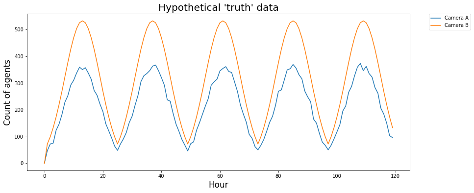

Forecasting Short-Term Urban Dynamics: Data Assimilation for Agent-Based Modelling
Nick Malleson, Tomas Crols, Jon Ward, Andrew Evans
Schools of Geography & Mathematics, University of Leeds, UK
nickmalleson.co.uk
surf.leeds.ac.uk
dust.leeds.ac.uk
These slides: http://surf.leeds.ac.uk/presentations.html
Abstract
The 'data deluge', coupled with related 'smart cities' initiatives, have led to a proliferation of models that capture the current state of urban systems to a high degree of accuracy. However, they are typically 'black box' in nature, which makes it difficult to use them to better understand the fundamental dynamics that drive the systems under study. Furthermore, many example models of 'smart cities' appear limited in their ability to *forecast* future system states. Agent-based modelling (ABM) is well suited to modelling urban systems, but is limited in its ability to incorporate up-to-date data as they arise in order to reduce uncertainty in model forecasts. This limits the usefulness of ABM a forecasting tool. This paper presents ongoing work that adapts data assimilation techniques from fields such as meteorology (specifically the 'ensmble Kalman Filter') in order to allow agent-based models to be optimised using streaming data in real time. Here, a simple example of an agent-based model used to simulate the movement of people as they travel along a street is illustrated. Importantly, the model is optimised dynamically in response to hypothetical data streams. The paper will also demonstrate some important secondary uses of the technique as a means of capturing model uncertainty. Ultimately, we work towards a combination of ABM and data assimilation methods that will be able to assimilate streaming ‘smart cities’ data into models in real time.
How many people are there in Trafalgar Square right now?
We need to better understand urban flows:
Crime – how many possible victims?
Pollution – who is being exposed? Where are the hotspots?
Economy – can we attract more people to our city centre?
Health - can we encourage more active travel?
Achieve this through agent-based modelling?
Results
Agent-Based Urban Modelling
Current Research
Simulating Urban Flows (surf)
3 year research project funded by the UK ESRC
One of the aims: calibrate an urban ABM using streaming data
Turns out this is really hard!
Agent-Based Urban Modelling
New project: Data Assimilation for Agent-Based Models (dust)
5-year research project
Funded by the European Research Council (Starting Grant)
Started in January
Main aim: create a new method for dynamically assimilating data into agent-based models.
Overview
ABM for a geographical simulation of urban flows
Major hurdle: real time calibration
Dynamic data assimilation for ABM
with an ensemble Kalman filter (EnKF)
Towards a real-time city simulation
Help and advice please!
3. Divergence
Complex systems
One-shot calibration
Nonlinear models predict near future well, but diverge over time.

3. Divergence
Drawback with the 'typical' model development process
Waterfall-style approach is common
Calibrate until fitness is reasonable, then make predictions
But we can do better:
Better computers
More (streaming) data
Methodological gap
Dynamic Data Assimilation
Used in meteorology and hydrology to constrain models closer to reality.
Try to improve estimates of the true system state by combining:
Noisy, real-world observations
Model estimates of the system state
Should be more accurate than data / observations in isolation.

DDA: How?
One example: Ensemble Kalman Filter (EnKF)
Broad literature, but generally tied to mathematical models (e.g. differential equations and linear functions)
Working with a mathematician to do the hard work!
In all its glory: Ward et al., (2016)
Advantages
Similar to Kalman Filter (best in class)
But better for nonlinear systems
Ensemble Kalman Filter - Basic Process
1. Forecast.
Run an ensemble of models (ABMs) forward in time.
Calculate ensemble mean and variance
2. Analysis.
New 'real' data are available
Integrate these data with the model forecasts to create estimate of model parameter(s)
Impact of new observations depends on their accuracy
3. Repeat
Ensemble Kalman Filter (EnKF)
Outline

Experiment with an EnKF
Very simple ABM - people walking along a street
Every hour, x people begin at point A
CCTV Cameras at either end count footfall
Some people can leave before they reach the end (bleedout rate)
Complete model state can be captured in a state vector.
Aim: Estimate the number of people who will pass camera B

Hypothetical 'Truth' Data
Use the model to first generate a hypothetical reality
(Preliminary) Experimental Results
Summary
Number of agents who pass camera B:
In short: data assimilation only marginally changed the system state.
(Preliminary) Experimental Results
Parameter Estimation
Model parameters can be included in the model state vector.
Can the EnKF find the single model parameter? (The bleedout rate).
(Preliminary) Experimental Results
Quantifying Error (RMSE)
Forecast: 9.5; Analysis: 6.5; Observation: 3.0.
Surprising because we would expect Analysis < Observation
Virtual observations are closer to 'truth' than the analysis :-(
This is probably due to the degree of randomness in the model - intelligent guesses will rarely be closer to reality than observations (even noisy observations).
EnKF estimates the model parameter (bleedout rate) accurately :-)
Conclusion and Outlook
Surprising lack of smart cities forecasting
ABM potentially able to combine 'big' data to make more reliable short-term predictions
Lots of work needed to adapt data assimilation techniques
Future: a holistic city model, estimating the current state and predicting future states.
Conclusion and Outlook
Lots that we can borrow from the hard sciences
Emulators
Simplified versions of a computationally-expensive model that can be executed quickly
Good for exploring the parameter space
Uncertainty
Improved methods for quantifying and visualising uncertainty.

References
Bond, R., and Kanaan, A. (2015) MassDOT Real Time Traffic Management System. In Planning Support Systems and Smart Cities, S. Geertman, J. Ferreira, R. Goodspeed, and J. Stillwell, Eds. Springer International Publishing, pp. 471–488.
Kitchin, R. (2013a). Big data and human geography Opportunities, challenges and risks. Dialogues in Human Geography, 3(3):262–267.
Kitchin, R. (2013b). The Real-Time City? Big Data and Smart Urbanism. SSRN Electronic Journal.
Mayer-Schonberger, V. and Cukier, K. (2013). Big Data: A Revolution That Will Transform How We Live, Work and Think. John Murray, London, UK
Ward, Jonathan A., Andrew J. Evans, and Nicolas S. Malleson. 2016. Dynamic Calibration of Agent-Based Models Using Data Assimilation. Open Science 3 (4). doi:10.1098/rsos.150703.
Forecasting Short-Term Urban Dynamics: Data Assimilation for Agent-Based Modelling
Nick Malleson, Tomas Crols, Jon Ward, Andrew Evans
Schools of Geography & Mathematics, University of Leeds, UK
nickmalleson.co.uk
surf.leeds.ac.uk
dust.leeds.ac.uk
These slides: http://surf.leeds.ac.uk/presentations.html